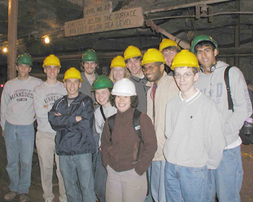

This year, student research projects covered a wide range of topics from space physics, condensed matter physics and biophysics, including, as well, research and development into future detectors for experimental cosmology, high energy physics and astroparticle physics deep underground.
Lauren Barth-Cohen (Smith College) worked under the direction of Prof. Cushman, studying the beta-induced background events to a possible real signal of weakly interacting dark matter particles interacting in the CDMS detector at the underground facility in Soudan, Minnesota.
Michael Busch (U. of MN, TC) working under the supervision of Prof. Lysak, modified an existing auroral simulation code to include ion motion in the magnetosphere, successfully reproducing spacecraft observations of upstreaming ions associated with auroras. Results of this investigation will be presented at the general meeting of the American Geophysical Union, San Francisco, in December.
David Caven (U. of MN, TC) worked under the direction of Prof. Dahlberg, exploring ferromagnetic/antiferromagnetic bilayers using the technique of AC susceptometry, establishing its usefulness in future studies of the magnetic properties of exotic materials such as spin glasses.
Eric Chitambar (University of Notre-Dame) worked under the direction of Prof. Heller on pre-construction research and development for the proposed NOvA Far Detector, measuring the volume expansion coefficients of the two main material components of the detector, liquid scintillator and PVC.
Gregory Christian (Georgia Institute of Technology) worked under the direction of Professor Crowell on a study of the transport of spin-polarized electrons in GaAS using circularly polarized laser light, as part of an ongoing research program on the basic physics of spintronic devices.
Jolene Johnson (Gustavus Adolphus College) worked under the direction of Prof. Muller, studying in vivo photobleaching of EGFP, EYFP and ECFP, proteins in common use in fluorescent fluctuation spectroscopy, an experimental technique for the study of biologically important macromolecules.
Matthew Mecklenburg (U. of MN, TC) worked under the direction of Prof. Halley, developing a novel experimental technique as an alternative to inelastic neutron scattering to study the quasi-particle excitations around the Bose condensate in Helium-II.
Trevor Rhone (Macalester College) worked under the direction of Prof. Goldman, studying the superconductor-insulator phase transition in annealed and UV-irradiated Indium Oxide thin films at low temperatures.
Emily Tubman (University of Michigan, Ann Arbor) worked under the direction of Prof. Cattell, analyzing satellite data on electric and magnetic fields in the region of the bow shock, the narrow boundary where the solar wind is slowed to below the local sound speed and is thermalized upon meeting the Earth’s magnetosphere.
Colin Wallace (Case Western Reserve University) worked under the direction of Prof. Hanany on pressure and vacuum tests of components, part of the research and development effort for the E and B Experiment (EBEX) detector, a proposed balloon-borne device to measure the polarization of the Cosmic Microwave Background
Aaron Wech (Kansas State University) worked under the direction of Prof. Wygant on a preliminary investigation into possible acceleration mechanisms of energetic particles in the reconnection region of the Earth’s magnetosphere, where electron and ions were observed by the Cluster Spacecraft at energies significantly higher than previously expected.